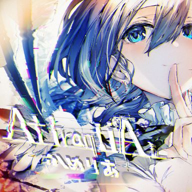
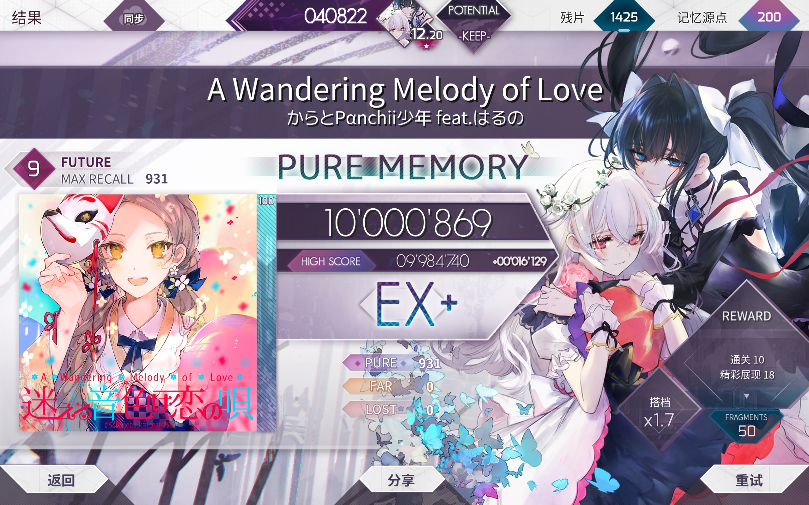
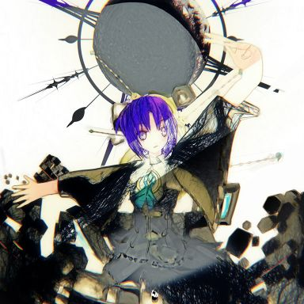
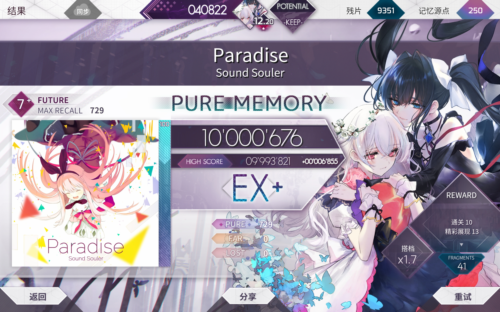

碎碎念
与其他音游杂谈一样，本文章将用于对arcaea内各种曲目的吐槽。但由于本文章施工较晚，因此只能从单星的角度来看待铺面了。
本文档将会主要记录ftr、etr、byd难度，以及prs9难度。曲名将会以英文版为准，默认为ftr难度。
说明：增加背景一项，分为：亮不可转暗、亮转暗、暗侧 三种
教程
【图片】从零到11.x ：萌新向 / 进阶向玩家提升指南【arcaea吧】_百度贴吧
19年的老教程，尽管教程偏老部分内容不再适用，但依然有参考意义。对于萌新而言可以直接看下边的教程了。
【图片】[lbk]从0到11.8+[rbk] 5.7版本下的萌新入坑/进阶指南【arcaea吧】_百度贴吧
老教程的重制版，发帖时间为24年6月。
【图片】通往双星之路：12.0～12.5推分指南【arcaea吧】_百度贴吧
进阶版教程，发帖时间为24年6月。
吐槽
今天一天p的9级比我过去8年加起来p的都还多。今天p了整整8首QAQ。
2025.03.14
10+
真正意义上的高难铺面。
10.9
仅次于11的最高级别铺面。
难点梳理：
ViRTUS：bpm225下的高速曲。蛇难键盘难，Nitro老师最近写10+写的有点太多了。
Einherjar Joker BYD：升级版Heavensdoor BYD，bpm222下的🐉b底力曲，底力要求极高。
Breach of Faith：最难手序曲，底力要求较低，难度全在手序，值得仔细研究。如果会打的话会非常好玩。
業 -善なる神とこの世の悪について-：10.9中最好嫖分的一首，但是对底力要求也比较高。
CHAOS：绝灭大帝的经典作品，刚出的时候评价非常低
Vulcānus：类翡翠鸡的16分交互，个人差有点大。
Designant. ftr：变速段平等创到所有人。
DA’AT -The First Seeker of Souls-：bpm222下的键盘底力铺+有点抽象的蛇，Nitro老师最近写10+写的有点太多了。
And Revive The Melody：bpm210-220，也是高底力要求，也是Nitro。24年年底到25年年初的10.9几乎都是Nitro写的，guy有点过于压榨员工了。
Vulcānus
- 曲师：Team Grimoire vs Aoi
- 曲包：Rotaeno联动
- 时长：02:44
- BPM：212
- 谱师：Volution IV
- 画师：月裏
- 物量：1065
- 背景：亮不可转暗
铺面：个人差不小的10.9。个人认为是10.9中下位，因为我嫖到分了（988w）。
感觉难点就是：亮瞎眼的亮侧。
然后就是开头的蛇，需要向外划非常容易掉；旋转交互，但是16分；类翡翠鸡的16分坑爹交互，但是由于bpm是212因此比翡翠鸡难度大很多。
别的段稳住就行。
仅从推分角度而言，个人真感觉是10.9最下位，因为全曲最高也就bpm212下的16分交互，对于底力要求真不高，主要难点还是在稳定度和类翡翠鸡的16分坑爹交互那段的研究。
顺带一提有人认为本曲prs是最难10.5但是我初见PM了，就很……
顺带二提，rotaeno侧是真打不了一点，甚至比翠杜还打不了。
谱师名义：Volution，旋转；IV，rotaeno最高难度。
曲子：rotaeno联动合作曲，有人对于Aoi的混音评价不高，但是我个人感觉还在可接受范围内。
打起来还是挺爽的。
2025.03.19
10.8
整体难度相比10.7大了一大截。
难点梳理：
Heavensdoor BYD：BPM240下的🐉b底力曲。
Ringed Genesis：三连爆发劲爆拍砖，会爆发的话就能吃分，不会的话就打不了一点。
Dantalion：10.9降格，bpm186下的底力曲。
BUCHiGiRE Berserker：10.9降格，bpm200下的🐉b底力曲，有很多爆发段。
w4：隐写
Divine Light of Myriad：蓝的喷
GENOCIDER：10.7升格，升格前是超级虚低曲，bpm250-390
Stasis：10.7升格，升格前是超级虚低曲。碎蛇、还原本家的闪现、还原本家的传说の20秒。
PRIMITIVE LIGHTS：10.7升格，升格之后算是中下位10.8？体力曲，非常锻炼。
Black MInD：打交拆铺，算是中下位10.8
Black MInD
- 曲师：COISO
- 曲包：Groove Coaster二连
- 时长：02:13
- BPM：192
- 谱师：聖輪
- 画师：-
- 物量：1274
- 背景：暗
铺面：10.8下位，铺面基本都是bpm192下的16分纵连/交互，对于底力要求不高但对于稳定性要求非常高，同时蛇也很容易掉。可作为拆谱练习曲。
难点在于容易掉的蛇，交互纵连稳定性，拆谱。
开头，蛇非常容易掉，非常恶心。
259，反手转圈，初见也容易掉。
274，16分纵连，别打快了。纵连之后是12分小爆发，等效bpm288下的8分双押或者bpm144下的16分双押叠。
再之后就是大量的交互、移位交互、交互转纵连的配置，需要一定的拆谱力+稳住。楼梯可拆可硬扛，bpm192的16分还是不算特别快的。
600，反手转圈x2，转完有个天地双押，再之后有一段极其罕见的10分音，不搞理论的话当作稍快的8分打过去就可以了。
658，反手弧形蛇，需要注意，容易掉。
728，类衔尾蛇的大楼梯，可拆可抗。
821，16分16连天键交互，也注意别打快了。后边继续12分双押。
在之后就是前边的配置的重复。
1115，划蛇+天地交互，因为有蛇的存在需要稍微注意一下手序。
1226，尾杀3组12分双押，转4连16分纵连。
总体而言就两个字，稳住。蛇稳住不掉，各种交互纵连楼梯稳住，就没问题了。
曲子：非常适合打交的一首曲。
2025.03.18
10.7
6.0改定数后10.7相比10.6和10.8显得眉清目秀的，现在还留在10.7的曲子除了风暴和里里黄以外都算常规曲甚至水曲。部分曲子相比10.6甚至更好吃分。
2025.03.11
Inverted World ETR
- 曲师：ARForest
- 曲包：Rotaeno联动
- 时长：02:14
- BPM：180
- 谱师：聖輪（CERiNG）↓↑夜浪（Nitro）
- 画师：Mechari
- 物量：1065
- 背景：白可转暗
本家链接：[[rotaeno杂谈#Inverted World]]
铺面：我ETR比FTR高，nitro你有什么头绪吗？
个人差比较大的一首。纯交互谱，会打交互就是水谱，不会的话就是难谱。个人成功吃到了分，目前暂为b1。
在rotaeno定数改变之前可以说成功还原本家的虚高定数，但是现在本家定数削成13.6了，现在反而是本家虚低arcaea虚高了。
曲子：好听，不愧是ARForest。
2025.03.12
ouroboros -twin stroke of the end-
- 曲师：Cranky VS MASAKI
- 曲包：Groove Coaster联动
- 时长：02:29
- BPM：188
- 谱师：Groove 東星（Toaster）
- 画师：-
- 物量：1369
- 背景：暗
铺面：标准的10.7，推分难度较低但据说推PM难度高。
主要难点：容易掉的蛇（掉麻了），各种纵连，尾杀24分18连大纵连（等效bpm282下的16分纵连），对于底力、稳定性、拆谱能力都有很大考验。
音乐：爽。
2025.03.18
10
10.6
10级的最高难度小级，各种妖魔鬼怪的聚集地。
吃分曲：Dies irae（爽曲，虚高），AttraqtiA（下位10.6，底力足够的话能吃到分），Overwhelm（交互爽曲，虚高），MVURBD（不算简单但也能吃到分），cyanine（会打纵连的话就能吃到分）
难点梳理：
Axium Crisis，前10.7，反手、慢速大挑战
corps-sans-organes：里黄，
Seclusion：蓝的喷
Live Fast Die Young：抽象蛇。
Good bye, Mother-Not-Found：没🐎木🐎
[X]：不会打
UNKNOWN LEVELS：慢速段，比cyanine更难的纵连
Back to Basics：喜欢我地雷妹吗？超赞抽象蛇+等效bpm210下的单点交互
Manic Jeer：纵连
Lament Rain：综合性的难
Astral Quantization：这个你把它当成BYD10+就合理了。
Aether Crest: Astral
- 曲师：void (Mournfinale) × 水野健治
- 曲包：中二4联
- 时长：02:44
- BPM：180
- 谱师：M理論 《Quintessence》
- 画师：すずなし
- 物量：1508
- 背景：白不可转
guy哥又去sega卖钩子了。
铺面：在10.6中算是中上难度的吧。推到990很简单，但想要继续向PM推的话非常难。
57，16分交互，不难但偶尔会爆far
109，开始第一个四押，由于是交互转四押容易手滑，接蛇的时候一定要按牢。
277，出四押段之后到达第一个难点。首先是单手蛇单手出张，然后接16分天地交互，然后再接蛇，然后121的结构，单手接地键，单手接天键的16分叠；然后重复一次。这段贼容易爆far，尤其是叠键那里，采的音不明显，靠目压非常容易爆far。
叠可以拆也可以硬扛，硬扛纯粹看底力了，实际上抗比
【官谱正攻拆分手法】[10.6] Aether Crest: Astral
376，蛇段，蛇有极小的几率掉，注意蛇里藏的地键，白侧下不容易注意到。
480，第二个难点，坑爹的24分交互接天键（可以等效为7个24分交互），180bpm下24分交互对于底力要求较大，然后还要大位移去接那个天键，很容易爆掉。
596，出张地键，用辅助指接会好接一些。
695，节奏有点坑爹，先是7个双押，然后变24分4连交互，然后双押，然后4连交互，3连交互，然后天键交互中途还要位移接长条。
795，全曲最难段，节奏只能靠背。先是2+1+1+1+2，再2+1，再3+1+1+3（16分+8分+8分+12分），采音在鼓点上。
870，玩蛇，蛇扭的稍厉害，可能会掉，接蛇头的时候稍微向左右多定位一点。
下边第二段四押，比较简单。出四押之后开始一堆天地交互，需要注意手序。
1153，全曲最难玩蛇段，蛇有点出张+速度较快，非常容易掉。个人经验就是接蛇的时候多向外边一点，防止漏掉。
1368，最后一个难点。各种交互尤其是最后的天键交互转地键转天键（同时还是24转16转24）的位移比较考查底力，容易爆far。
总体而言难点在于位移交互+时不时漏的蛇+坑爹的795端的单点节奏。bpm180的24分可以等效为bpm270下的16分交互，对底力要求还是比较高的。
# 【Arcaea/节奏解析】Aether Crest: Astral 石原坂奈
曲子：
KOP6中二决赛曲，b格拉满。咱们啊卡伊真的是蒸蒸日上了啊。
2025.03.11
Back to Basics
- 曲师：m1dy
- 曲包：Memory Archive - 原创
- 时长：02:31
- BPM：420
- 谱师：夜浪 THE FUMEn ANARCHIST（Nitro）
- 画师：TKKsn.
- 物量：1544
- 背景：暗
喜欢我地雷妹吗？
铺面：……蓝的喷。
笑点解析，本曲在v6.0.0以前是10.5
游戏中标注bpm420，实际上可以当作bpm210处理。难点就是巨量bpm210下的高速单点和各种神秘交互，以及神秘抽象直角蛇。非🐉b不推荐尝试。
这首把它当作BYD 10.6就合理了。
2025.03.17
AttraqtiA

- 曲师：かめりあ
- 曲包：Memory Archive - 原创
- 时长：02:38
- BPM：202
- 谱师：Toaster affected by ‘CHUNITHM’
- 画师：Enji
- 物量：1427
- 背景：亮可转暗
铺面：随着一堆水10.6被降级，AttraqtiA现在反而成为10.6中难度比较低的那一批了，悲。
95，边花蛇边反手点键，稍微有点卡手
139，一个奇怪的三角交互
162，8分天地双押，别打快了
170，全曲最难段，bpm202下24分位移交互，等效bpm303下的16分位移交互。这段同时需要高爆发力和较高的定位力，底力要求很高；更可怕的是这个配置一共出现三次。
360，反手转圈，容易掉。
442，重复170的配置
711，单点+天地双押，转三角交互+天地双押，转四连交互+天地双押，最后转16分长交互，交互的最后右手要打16分叠。这段对于交互力、稳定性、底力要求非常高。
963，第二次重复170的配置。
1025，反手接蛇接长条，注意定位
1174，第二次反手转圈圈
1290，12分天键楼梯（等效bpm151.5下的16分交互，别打快了），容易爆far
在之后就没难点了，主要难点就是体力可能没了。
整体而言难度比较均匀，换句话来说就是从头到尾都有可能突然崩盘，尤其是难的配置都要反复出现两到三次，就很坑爹。
考点主要是稳定度和爆发（还有体力），需要一定的底力。个人感觉推分相比目前还没被削的妖魔鬼怪10.6来说不算很难，单星人可以多打几把练练底力。
曲子：中二三连中的原创曲（合作曲？），同时收录于中二侧；同时铺面设计也受到中二侧铺面的影响（中二侧铺面同时也受arc侧的影响）。
山茶花的爽曲，打起来很爽但是好累😭。
顺带一提曲绘应该是尼尔（慈悲/哀寂），可能说明616早在2021年就在下一盘大棋构想4年之后的剧情，也有可能只是普通原创角色升格为主线角色了。对此画师Enji表示616不让说。
2025.03.19
Dies irae ETR
- 曲师：お月さま交響曲
- 曲包：Memory Archive - 原创
- 时长：02:32
- BPM：172
- 谱师：M理論
- 画师：michele
- 物量：1263
- 背景：暗
铺面：虚高的一首，实际难度在10.4~10.5左右，对于底力足够的人而言很好推分，但某几处还是比较卡手的。节奏比较复杂，据说理论难度很高。
开头不怎么难。
187，开始匀速8分段，bpm172下的八分稍微比较慢，稳住了即可。蛇出现后有跨手单点，注意跨手后的定位和稳定性。
293，变成21的配置，一边为16分叠，稍微吃点底力；难点同样是跨手单点，容易爆far，注意稳定性。
398，先是12分三连单点（bpm258 八分单点），然后变成1+2的12分单点。
639，天地交互段开始，让手自己拆.jpg
725，全曲最难段开始。这里各种三连四连同轨天键交互，其中三连为16分，四连为24分（等效bpm258下16分交互），节奏比较复杂。
然后转单手8分匀速单点，稳住。
861，24分爆发段开始，先是三连交互，再是位移稍大的四连交互，然后反手蛇（容易掉），蛇完紧接着一大堆神秘24分交互，这段只能靠底力压过去。
1074，重复639的天地交互段。后边的反手蛇后紧跟地键，但是这个地键距离蛇尾有一个位移，很容易漏，需要注意。
1170，24分四连交互。扛过去就结束了。
想要压小还是稍有难度的。
曲子：Purgatorium 2.0，お月さま交響曲时隔快6年后第二次给arcaea供曲，曲子还是非常爽的，尤其是电吉他段。
2025.03.22
10.5
更新之后不少10.6甚至10.7的曲子被降到了10.5，于是10.5也开始变得混沌起来了。
吃分曲：Straight into the lights（反手打好尾杀打好就解决了），Twilight Concerto（交互打好就解决了），Judgement（下拉蛇别正攻，只打地面；除了下拉蛇以外的难度堪比10.2），Wish Upon a Snow（主要难度在大宇宙交互上，别的不怎么难）。
难点梳理：
10pt8ion：慢速121
Rain of Conflict in a Radiant Abyss：非常诡异的天地双押转纵连
MEGALOVANIA：慢速反手楼梯
Singularity：你怎么变10.5了？ 原最下位10.7，削成10.5之后吃分难度大大提高。
Halcyon：你怎么也变10.5了？原下位10.7，削成10.5之后从虚高直接变略虚低了。
GLORY：ROAD：你怎么也也变10.5了？原10.6，bpm250下底力大考验，著名的天地交互很容易手癖。
Sheriruth (Laur Remix)：你怎么也也也变10.5了？原10.6，神秘交互曲，在10.6中都算是中上位的了，搞不懂这首为啥降了。
Arcana Eden：终章包的考验。
Lucid Traveler：神秘大弓蛇+反手蛇，神秘交互。
Rise of the World：小碎蛇+尾杀长交互
Ego Eimi：交互，旋转交互
eden：bpm246下的底力大大大考验，喜欢我bpm246下的24分6连交互吗？（等效bpm369 16分）
Aleph-0：究极变速曲+尾杀你理论/PM/FC没了，尾杀搞所有人心态。
2025.03.22
Straight into the lights ETR
- 曲师：Cosmograph
- 曲包：maimai 三联
- 时长：02:29
- BPM：90（实际按照180处理）
- 谱师：反水（antymis） × 夜浪（Nitro）
- 画师：-
- 物量：1280
- 背景：暗
难度：主要难度在于一堆反手和尾杀，会打了之后就比较水了。
571，我就是奶龙我就是奶龙
621，反手短蛇，需要注意，幸好这段不长，熟练之后就可以了；紧接着一个交互转纵连，但180bpm还好。
696，抬手蛇，蛇挡地键需要注意。之后就是反手接长条，尽管可以回避反手但是正攻也并不难。
880，赏你吃的白菜怎么少几斤的，大爽段。
尾杀，先是反手短蛇，然后两段尾杀，第一段纯打交，第二段地键打交天键叠键，这个叠键的天键需要拆但是速度太快影响判断，一个不留神很容易直接爆炸，需要注意；最后反手蛇，小心蛇红了。
除此之外还有开头和结尾段的直角蛇，需要跨手打地键，然后地键出现在1、4道，对于大尺寸平板玩家来说跨度较大，不太好打，比较考验定位。
总体而言不难，算是比较爽的水曲。同样是考查反手的，比MEGALOVANIA要简单不少。
由于本家铺面过于优秀，因此即使是本谱质量不错的情况下也有人感觉不满，悲。
曲子：爽！
maimai三连这次616真的是赢麻了，选的三首都是重量级曲子。顺带一提直入光目前似乎还没上国服。
目前战绩996，6f2l，主要还是尾杀似了。
2025.03.10
MEGALOVANIA ETR
- 曲师：Toby Fox
- 曲包：Undertale联动
- 时长：02:36
- BPM：240
- 谱师：瑞獣 ＬＶ１９
- 画师：不知道
- 物量：1202
- 背景：
铺面：很难。
196开始高速大位移双押，位移我是真的打不了。双押之后接楼梯，需要拆解，不拆手速跟不上；500开始经典sans交通指挥，初见杀，记得一只手（第一次是蓝蛇，第二次是红蛇）一定不要松手。交通指挥会出现两次。；交通指挥之后是慢速段（728），先是慢速蛇，蛇划度大容易漏、天键容易爆far，这里neta躲骨头，会有骨头形状的线；慢速蛇之后（781），慢速+单手双押+反手楼梯，由于蛇没有尾判因此可以提前松手避免反手，但实际操作有点难度；慢速段之后玩蛇段，蛇看上去不难但容易漏；在之后就是花蛇段，有反手，有点难。；最后重现开头的配置，over。
难点很多，最主要的是反手很卡手。
曲子：
传说之下sans决战曲，经典+爽。
目前是真的打不了，反手掉完了。
2025.03.10
高bpm下搞反手搞移位是真的累。
2025.03.11
Twilight Concerto ETR
- 曲师：Scarlette
- 曲包：Memory Archive - 音乐游戏 (KALPA)
- 时长：01:41
- BPM：194
- 谱师：Exschwasion
- 画师：-
- 物量：962
- 背景：暗
铺面：绝灭大师我喜欢你。
打交爽曲，194bpm下的各种16分交互，全程除了打交以外就没有别的难点，也就绝灭大师的蛇有可能掉，因此只要会打交就能吃到分；但同时物量只有962，只要稳定性稍微差一点就farfarfar，想推高分还是不怎么容易的。
可以作为十六分交互稳定性练习曲。
曲子：
本曲为Arcaea第七首Crossing Pulse系列曲目，联动方为KALPA。曲子时长仅有1:41，成为全游第二短的曲子（第一是mush dash联动的Lights of Muse，1:40），因此荣登全游爬梯效率最高的曲子。（定数比本曲高的最短曲子目前是黑蚊子多BYD，02:11）
2025.03.22
Lightning Screw
- 曲师：HiTECH NINJA
- 曲包：白姬包
- 时长：02:07
- BPM：190
- 谱师：東星
- 画师：シエラ
- 物量：1192
- 背景：亮可转暗
铺面：节奏比较复杂。某一把我甚至打出了early 10far+111小p的诡异成绩。
主要难点是全程位移交互、中间的加速位移长条段（正攻容易掉，可以做对拍处理，减少定位压力），尾杀的长16分交互。
在更新以前算是10.5中上位的曲子，但是更新之后不少10.6甚至10.7的妖魔鬼怪被降到10.5了，现在在10.5里只能算中等难度的了。
2025.03.22
10.4
Placebo♥Battler
- 曲师：OSTER project
- 曲包：Memory Archive - 原创
- 时长：02:39
- BPM：270
- 谱师：絶滅【再構築】
- 画师：cyawa
- 物量：1194
- 背景：亮可转暗
铺面：绝灭大师我喜欢你。
超赞跳拍+超赞反手，虽然反手不多不算特别卡手但是在高bpm下还是经常掉。节奏非常复杂，再加上高达270的bpm准度很容易爆，对于准度极差的我来说简直就是准度地狱QAQ。
更坑爹的是本曲是光侧背景，但是能转成暗侧，但是某个sb并没有注意到这一点硬生生在光侧下刷了n pc，哭死。
曲子：arcaea八周年纪念曲。
非常活泼的一首曲子，顺带一提音源是比较小众但个人很喜欢的音街鳗。曲师OSTER project是知名v家p主，但在arcaea这边是初次收录她的作品。
画师cyawa也是初次合作。
2025.03.10
同志们，转暗侧之后直接997了，一定要转暗侧啊。
2025.03.10
10.3
Dual Doom Deathmatch ETR
- 曲师：Kobaryo vs HyuN
- 曲包：Rotaeno联动
- 时长：02:22
- BPM：222
- 谱师：NITRO
- 画师：炎獵
- 物量：1292
- 背景：暗
铺面：10.3，对.对吗？
110，第一个bpm222下的16分交互。
177，蛇接16分移位交互，左右手要移位两个轨道，有点卡手。
190，3连单点转三角
275，个人很喜欢的一段，蛇的演出非常棒。
360，反手交互，但是可以提前松手转正攻。
649，24分三角爆发，等效bpm333下的16分爆发
826，移位天地交互，三组
1000，呃呃这段我不好评价，真不会打。这个蛇真有点抽象了。
1088，喜欢我反手楼梯吗？
总体而言抛开1000以后的配置不谈，光是bpm222下的大量16分移位交互和24分爆发就让本曲的底力要求很高，再加上1000~1100的抽象蛇和反手配置，整体难度肯定是算中上位10的，感觉定10.4或者10.5会更合理，10.3真的虚低了。
曲子：爽中爽。
2025.03.17
10.2
Your Best Nightmare BYD
- 曲师：Toby Fox
- 曲包：Undertale 联动
- 时长：02:54
- BPM：190
- 谱师：Arcaea Charting Team【The Six Souls】
- 画师：不知道
- 物量：1451
- 背景：暗侧
铺面：真·BYD，纯正的愚人节铺面体验。
抛开绿蛇和各种骗人配置不谈，主要的难点只有一种配置。
482开始的长条接蛇配置比较坑人，这里长条之后不能松手，蛇旁边那个键要跨手处理。
别的配置都比较基础，确实符合10.2的配置。不过按照BYD的玩法的话，标个9+都不为过（乐）
绿蛇无物量，可以不打，但在实战中挺影响体验的，干扰性非常大，打起来真的难受。
铺面大量还原本家，具体细节不再多说，请参见评论区。
【Arcaea谱面保管室】Your Best Nightmare [BYD 10] 谱面确认
曲子：中立线boss曲，打精污花的bgm。
本曲真的适合写BYD。打完心里只剩下byd了。
2025.03.10
9+
最魔幻的一个等级，充满大量神秘与实验性配置，各种妖魔鬼怪的聚集地，即使是单星也经常被里边的各种妖魔鬼怪给创到。
从9到9+的过渡可以说是极其难熬的一段时期了，尽管9.5、9.6和9+之间看似只差几个小定数，但是实际难度差距会很大，尤其是9+的曲子多专注于某一特定的配置，难点比较单一和专精，因此个人差极大，只要这个难点不能熟练掌握，就很难吃到分。
9+是全游ftr数量第二多的等级，仅9.8一个等级就被塞了41首ftr和10首etr/byd，因此9+的每一个定数内部的难度分布都很抽象。
对于9+而言，我的建议是专注于自己能打的曲子，不要死磕那些神秘曲子。在底力达到一定水平之后可以试试10.0和10.1的水曲，这两个定数的曲子可比9.8和9.9的某些曲子拟人的多。
2025.03.14
9.9
9+就没啥抽象曲推荐了，全员都挺抽象的。
相对简单的曲：Heavensdoor（底力曲，底力足够就能嫖到分），trappola bewitching（曾经的最水10.0，掉到9.9之后依然算是9.9中好嫖分的曲子），Summer Fireworks of Love（底力铺，但是底力要求相对别的9.9算是低的了）
难点梳理：
Antagonism：
Swan Song：bpm148下的巨多24分交互。底力验证器。
Amekagura：bpm105下的32分长交互+各种大划蛇。
ViRTUS：呃呃这个真的不好评价。
Swan Song
- 曲师：void (Mournfinale)
- 曲包：Lucent Historia（蚂蚁包）
- 时长：02:43
- BPM：148
- 谱师：小終点（én）
- 画师：Noyu
- 物量：1225
- 背景：亮不可转暗
封面三月七
铺面：各种bpm148的24分交互（等效bpm222 的16分交互），各种长交互天地交互，简直就是个交互博物馆，令人叹为观止。除了交互以外中后期还有个手序配置，需要一定的读谱和拆铺能力。
总体而言综合难度已经能比肩10.2~10.4了，对于玩家的底力、稳定性、读谱拆铺能力都是一次巨大的挑战。
曲子：
两个字，好听。
2025.03.15
ViRTUS
- 曲师：Hiro
- 曲包：maimai三连
- 时长：02:25
- BPM：225
- 谱师：NiTRO
- 画师：-
- 物量：1222
- 背景：亮不可转暗
铺面：
BPM225+超大位移212配置+亮侧，这玩意不管是底力要求还是读谱要求还是定位要求还是稳定性要求都挺抽象的，单论这个配置的话难度堪称10+了。这个配置除了靠底力碾过去或者背谱，我还真不知道怎么处理。
别的话就抗两个8分双押串，一个5连双押一个尾杀6连双押；除了这俩配置以外就没难点了。
个人认为扔到10.3~10.4都不过分。
9.8
9+就没啥抽象曲推荐了，全员都挺抽象的。
相对简单的曲：Haze of Autumn（前最水9+，直到Awaken In Ruins的出现），To the Furthest Dream（光与对立的后日谈）， World Fragments III（爽曲），Kanjou no Matenrou（爽曲x2），Cybernecia Catharsis byd（实际上并不比ftr9.5难多少）
2025.03.15
难点梳理：
Waltz for Lorelei etr：绝赞节奏谱
LiftOff etr：卢大师经典作品。
SOUNDWiTCH：绝赞拆铺
Black Territory：
Corruption：来玩蛇
Einherjar Joker：bpm222的绝赞底力铺，各种24分交互。
Lost Desire：13131333
Altale：bpm83-90，知名低速谱，不过有人说不如记忆工厂。
Got hive of Ra：
Far Away Light：1113
Protoflicker：各种反手出张
Defection：谁打谁知道。
Callima Karma：
Genesis：bpm150超赞慢长交互，怎么感觉我好像说过一遍？
RGB：如RGB般闪耀的铺面。
Technicolour：尾杀反手长交互。
Einherjar Joker
- 曲师：DJ Genki vs Gram
- 曲包：Memory Archive - 原创
- 时长：02:18
- BPM：222
- 谱师：Requiem TaroNuke
- 画师：すずなし
- 物量：1159
- 背景：暗
铺面：底力大练习。
难点就是全程bpm222下的16分交互，外加尾杀6连24分交互（等效bpm333下的16分交互）
读谱方面没有难度，纯粹的底力练习。
9.7
9+就没啥抽象曲推荐了，全员都挺抽象的。
相对简单的曲：The Message，Sulfur（初入9+的第一选择），Dreadnought（3、5连交互练习曲），BLRINK，Vandalism（爽曲），Awaken In Ruins（全民PM9+计划指定用曲），Hotarubi no Yuki
2025.03.15
难点梳理：
Lethaeus：表黄，叠键爆发
DX Choseinou Full Metal Shojo：纵连少女，纵连
SUPERNOVA：bpm150超赞慢长交互，怎么感觉我好像说过一遍？
Monochrome Princess：单色公主，短纵连+天地交互
Black Lotus：bpm200底力曲，短纵连，移位长交互，天地交互
Heart Jackin’：节奏谱。
Loveless Dress：前最难9.6，亮吓人的背景中打各种抽象交互
SACRIFICE feat. ayame：喜欢我反手大弓蛇吗？
Awaken In Ruins
- 曲师：Supa7onyz
- 曲包：World Extend 3
- 时长：02:17
- BPM：125
- 谱师：antymis
- 画师：ましろみ のあ
- 物量：754
- 背景：
你觉得你是9+吗？
我觉得我是。
铺面：当年的9.9究极大水曲，现在降到9.7依然是究极大水曲。754的物量使得本曲PM难度堪比8.9，属实是红框必吃榜和全民9+PM计划专用曲了。
曲子：
范式的开幕曲，通过arcaea的Crossing Pulse企划联动过来的。
Crossing Pulse - Arcaea中文维基
所谓crossing pulse就是指和其他音游的小型联动，一般只联动1~2首，不出专门的联动包。
9
新人路上遇到的第二个门槛。花紫后期和红框前中期的ptt主要来源便是9级曲。同时9级曲也是ftr难度中曲数最多的，因此在9级打好基础是非常有必要的。
2025.03.14
9.6
9级的最后一个定数，内含全9级最难的一堆曲子，某些曲子的难度完全不亚于9+，当然能嫖分的水曲也有不少。
水曲：Quon (Feryquitous) ，LunarOrbit，Vindication，A Wandering Melody of Love
难曲：epitaxy etr，Purple Verse（世界包1的9.6虚低战神），ENERGY SYNERGY MATRIX（世界包1的9.6虚低战神二号），Lazy Addiction（把单星人打破防的是什么9级曲？），Heart（喜欢我10+下放尾杀吗？），Designant pst（变速段平等的创到所有人），还有一堆byd9.6。
2025.03.14
A Wandering Melody of Love
- 曲师：からとPαnchii少年 feat.はるの
- 曲包：群愿包
- 时长：02:13
- BPM：165
- 谱师：恋のToaster
- 画师：シエラ
- 物量：931
- 背景：亮可转暗
铺面：萌新之友，每一个红框人都受过恋歌的ptt恩泽。
除了517~573的那段天地交互以外没有难点，但这段需要较高的稳定性并且容易手癖，因此不推荐越级这首曲。
517~573的天地交互段决定着能否PM这首曲，只要这段能拿下，那么就距离PM不远了。
顺带一提，在游戏中，本曲在本地系统时间6:0019:59时显示白昼版曲绘，20:00次日5:59时显示黑夜版曲绘。
曲子：本曲为2019年arcaea第一届公募大赛冠军曲。作为冠军曲的奖励，群愿便是本曲的专属角色。
对于恋歌，就两个字：好听。

PM留念，因为是在19:55 PM的，因此痛失夜晚曲绘。
2025.03.15
Designant. prs
- 曲师：Designant
- 曲包：Lucent Historia（蚂蚁包）
- 时长：02:58
- BPM：200
- 谱师：2nd Command ≒ Perfection
- 画师：すずなし
- 物量：1426
- 背景：亮不可转暗
铺面：个人感觉抛开变速段不谈，蚂蚁prs的配置确实只是个上位9级，还没有达到9+的级别。整体而言主要难度就是变速段，尤其是最后的加速交互段。
2025.03.16
9.5
上强度的一个定数，有很多难曲和抽象曲。
虚低曲：
抽象曲：OMAKENO Stroke（大粪，ftr和byd都是），dropdead prs（prs定数比ftr高是一种什么样的体验？）
MAHOROBA
- 曲师：Zekk
- 曲包：Memory Archive - 搭档（彩梦）
- 时长：02:02
- BPM：195
- 谱师：TaroNuke + Nitro
- 画师：そゐち
- 物量：828
- 背景：亮可转暗
铺面：居然是9.5。
最开始一上来就一段交互配置，打完之后本曲的键盘配置难点就过去了。
后边主要是玩蛇，各种大幅度蛇，比较容易掉需要注意。
整体而言PM难度不大。

PM留念。
2025.03.14
9.4
9级中曲子最多的一个定数，目前多达ftr29首+etr2首+byd2首+prs2首=35首。
水曲：Dreamin’ Attraction!!（榨汁姬美年达），
虚低曲：Redraw the Colorless World（无机质，从9.2升到9.4后感觉还是虚低），Testify prs（最难9级竞争者）
蛇曲：Red and Blue（不要再骗鼠鼠的手了啊😭）
2025.03.15
AI[UE]OON
- 曲师：MYUKKE.
- 曲包：群愿包
- 时长：02:22
- BPM：145
- 谱师：N[I]TRO
- 画师：SiNoe
- 物量：989
- 背景：亮可转暗
铺面：入门级拆铺曲，能不能打好本曲取决于会不会拆铺。当然硬扛也不是不行，但是出于未来发展的角度还是推荐老老实实拆铺。
曲子：第一届公募大赛的优胜曲。
2025.03.15
9.3
GOODTEK (Arcaea Edit)
- 曲师：EBIMAYO
- 曲包：Arcaea
- 时长：02:06
- BPM：190
- 谱师：Nitro
- 画师：Koyama Mai
- 物量：968
- 背景：亮可转暗
铺面：bpm190下的交互练习曲，难点就是两段16连16分长交互、8分连点还有尾杀，尾杀小心手癖。
曲子节奏非常整齐，推分难度不算很高，但是想要PM还是挺考验稳定性和心态的。如果红框或者单星人感觉自己进入了瓶颈期，可以多打打这首。
曲子：BOFU2015第八名，打交爽曲。
PM留念，能PM还是有点小意外的。
2025.03.21
9.2
Dancin’ on a Cat’s Paw
- 曲师：Ino(chronoize)
- 曲包：Arcaea
- 时长：02:17
- BPM：148
- 谱师：antymis
- 画师：kkkfff2
- 物量：891
- 背景：亮可转暗
铺面：萌新时期的噩梦。节奏地狱。
和paradise一样属于节奏谱，采音均在钢琴上。主要难点在于比较复杂的节奏，初见很容易farfarfar，还有两段比较慢的交互。实际上底力上来之后多打两把熟悉一下节奏就能PM了。
曲子：BOFXVII（BOF2022）第63名。非常欢快的一首曲子。花紫时期很喜欢这首曲子因为能嫖到分。
PM留念。
2025.03.14
Alice à la mode
- 曲师：Masanori Akita
- 曲包：爱丽丝包
- 时长：02:30
- BPM：80-134
- 谱师：Toaster
- 画师：シエラ
- 物量：872
- 背景：亮可转暗
铺面：
也是节奏谱，前边的节奏略微复杂（甚至有变速，从bpm128变到134）但不算很难。主要难点集中在慢速尾杀上。
544，一段比较坑爹的单点节奏，建议目压+音压结合。
864，尾杀开始，速度降到bpm 80，慢速我不会打，直接开摆。
PM难点就在慢速尾杀上，要是不会慢速的话就推荐别轻易挑战本曲了，很容易因为前边全PM尾杀farfarfar而爆心态。
如果只是单纯推分的话可以试试，推分难度还是比较适中的。
2025.03.15
9.1
比9.0稍难一些的过渡阶段，整体难度也不算大。
适合过渡的曲子：Alice’s Suitcase，Life is PIANO，Iconoclast，Essence of Twilight，
抽象曲：Dropdead（ftr9.1，pst9.5）
Alice’s Suitcase
- 曲师：Endorfin. （sky_delta + Vocal藍月なくる)
- 曲包：爱丽丝包
- 时长：02:31
- BPM：190
- 谱师：Kurorak
- 画师：にんにくましまし
- 物量：999
- 背景：亮可转暗
铺面：注意叠键和叠键双押，没了。PM难度很低。
音乐：蓝月姐姐的歌，好听。
PM留念。
2025.03.14
Life is PIANO
- 曲师：Junk
- 曲包：Extend Archive 1
- 时长：02:10
- BPM：133
- 谱师：Nitro
- 画师：-
- 物量：674
- 背景：亮可转暗
铺面：主要是16分二连交互和短交互。二连交互比较散，正攻的话对于读谱、移位和定位要求较高，但由于bpm只有133，因此在不追求小p的情况下可以用单指来打。因为物量只有674所以说PM难度较低，但是容易爆小，压小p很难。
曲子：G2R2018第八名，著名的钢琴小曲，在多个音游都有收录。
非常清新欢快的感觉。
第二次PM留念，如图所示准度直接爆掉了，小p漫天飞。
2025.03.14
Iconoclast
- 曲师：Yamajet
- 曲包：Vicious Labyrinth，病女包
- 时长：02:06
- BPM：140
- 谱师：Toaster
- 画师：SKT
- 物量：795
- 背景：暗
铺面：萌新之友，花紫必吃榜，推分难度很低。
主要难点在于开头的211配置，采音很好注意音压；尾杀有连续22的组合，需要注意。
别的就注意一下蛇，蛇别断了。
PM留念。
2025.03.14
9.0
8级和9级的过渡阶段。目前ftr9.0的几首都不怎么难，和上位8+的难度差不多。
水曲：Flyburg and Endroll、Kanagawa Cyber Culvert、jump、Galactic Love。
Flyburg and Endroll
- 曲师：アリスシャッハと魔法の楽団
- 曲包：红包
- 时长：02:25
- BPM：180
- 谱师：N-Helix（Nitro）
- 画师：アリスシャッハと魔法の楽団
- 物量：930
- 背景：亮不可转暗
铺面：难点主要在于亮侧。
主要配置是玩蛇，但蛇本身并没有什么难的，难点在于开头被蛇挡住的一段8分单点和结尾边玩蛇边点note。由于亮侧+蛇有遮挡因此不注意的话很容易爆far。
推分难度很低，属于最下位9，花紫必吃榜。
PM留念，性了两三次。
2025.03.14
Galactic Love
- 曲师：La prière
- 曲包：Memory Archive - 流行/推荐
- 时长：02:42
- BPM：145
- 谱师：én
- 画师：-
- 物量：813
- 背景：亮可转暗
铺面：初见PM，没啥难的，玩蛇的时候注意别忘了点note即可。
曲子：La prière大好き！
什么，你不知道La prière是谁？那么这些名字你总听说过吧：藍月なくる，nayuta，棗いつき。
没错，La prière就是由这三位超人气同人歌姬于2019年组成的同人音乐组合少女乐队，不过乐队本身的名气好像不如她们三位中的任意一个。
本曲听上去感觉会是非常适合Live的一首曲子，在live现场能让全场嗨起来的那种。
PM留念，第一首初见PM的9级曲。
2025.03.14
Jump

- 曲师：Rasmus Faber
- 曲包：爱丽丝包
- 时长：02:29
- BPM：133
- 谱师：Nitroだー！
- 画师：あるみっく
- 物量：841
- 背景：亮可转暗
铺面：最下位9.0，jump就完事了。
曲子：
♪I just wanna jump♪♪Jump♪ ♪Jump♪ ♪Jump♪ ♪Jump♪ ♪Jump♪ ♪Jump♪ ♪Jump♪ ♪Jump♪ ♪Jump♪ ♪Jump♪ ♪Jump♪ ♪Jump♪ ♪Jump♪

PM留念。
2025.03.28
8+
v5.4.0新划分出来的难度。由于8+和8原本就是同一个等级，因此8+只能说是更难一些的8级，并没有从9到9+和10到10+那样的本质性的难度飞跃。
2025.03.12
8.9
8级的最后一个定数，拥有8级最上位的一堆曲子，但同时水曲也不少。
水曲：Suomi etr（蛇曲，但etr并没有比ftr7+难多少），Maze No.9（花紫必吃榜），Give Me a Nightmare（花紫必吃榜2号）
特殊曲：memoryfactory.lzh（大名鼎鼎的记忆工厂，arcaea头号慢速曲，建议新人在流速还比较低的时候尽早打这首，等到流速提到5甚至6之后就很痛苦了）
Chelsea
- 曲师：7mai
- 曲包：群愿包
- 时长：02:09
- BPM：174
- 谱师：TaroNuke
- 画师：Refla
- 物量：650
- 背景：亮可转暗
铺面：交互练习，拥有5连8连3连交互，后边还有反手练习，玩蛇的时候蛇有点挡键。
由于物量只有650因此PM难度不难，在8+中属于简单的。不太清楚为啥在v5.4.0从8.5升到了8.9，升完之后个人感觉虚低，但由于物量太低了因此只有准度较高的时候才能吃到分。
曲子：arcaea第一届公募大赛优胜曲。
很有7mai的特色，听完之后直接幻视隔壁rotaeno的Uchronia了。
PM留念。
2025.03.15
To the Milky Way prs
- 曲师：黒魔
- 曲包：Memory Archive - 搭档（奈美）
- 时长：02:46
- BPM：186
- 谱师：Nitroだー！
- 画师：Bison
- 物量：1154
- 背景：亮可转暗
仓鼠太太我喜欢你。
铺面：8级最上位，难度很高。
属于交互练习曲，巨多交互，巨多移位双押，物量高达1154，压力比较大。
曲子：黒魔的金曲，好听。
PM留念。
2025.03.15
Give Me a Nightmare
- 曲师：アリスシャッハと魔法の楽団
- 曲包：Extend Archive 1
- 时长：02:36
- BPM：95-190
- 谱师：CERiNG
- 画师：mokeo
- 物量：948
- 背景：暗
铺面：知名水谱，不管是推分还是PM都不难。
花紫必吃榜。
PM留念。
2025.03.20
MERLIN

- 曲师：REDALiCE
- 曲包：Groove Coaster Collaboration
- 时长：02:09
- BPM：180
- 谱师：Got More Taro?（TaroNuke）
- 画师：-
- 物量：712
- 背景：亮可转暗
铺面：最上位8+之一。
尽管看上去挺友好的，但是打起来并不怎么友好，实际上虽然物量只有712，但是从前到后的配置都比较容易爆far。
难点：
开头先是天键短交互，再是一个较长的16分交互；中间部分配置可能会爆far；结尾天地双押需要注意，尤其是最后的12配置，比较容易爆far。
这首性麻了。
曲子：
虽然用的音色都是很快乐的感觉，但是曲调还是有点忧伤，给人一种很朦胧不清的感情（摘自网易云评论区）
You can change🎶You can change🎶
性了四五回，真性麻了。
2025.03.28
Lights of Muse
- 曲师：Ayatsugu_Otowa
- 曲包：Mush Dash 联动
- 时长：01:40
- BPM：180
- 谱师：antymis
- 画师：-
- 物量：580
- 背景：亮可转暗
铺面：全游目前（2025.03.28）最短的曲子，物量也仅仅只有580，应该是ftr难度中物量最少的曲子。
物量太低+没啥比较难的配置 = PM难度很低，多打两遍差不多就能pm了。嫖分的话对于准度不高的萌新而言不怎么友好，毕竟一个far就少8000分，但是如果准度很高甚至能pm的话就可以狠狠吃分了。单曲10.9的分数对于花紫而言还是很诱人的。
2025.03.28
BlazinG AIR

- 曲师：kanone
- 曲包：中二4联
- 时长：02:20
- BPM：150
- 谱师：BlazinG ÉND（en）
- 画师：-
- 物量：757
- 背景：亮可转暗
铺面：含有不少切分音。个人认为最难段是单手划短蛇单手打键的那段，一只手划短蛇挺分散注意力的。
个人感觉PM难度在8.9中不算很高。

2025.03.29
Evoltex (poppi’n mix)

- 曲师：Arch vs n3pu
- 曲包：Dynamix联动
- 时长：01:46
- BPM：205
- 谱师：k//eternal
- 画师：-
- 物量：775
- 背景：亮可转暗
铺面：最上位8级，PM非常难。
含有大量的单点，节奏非常复杂的交互，bpm205下的16分长交互。
最难段为515之后的抽象交互楼梯。
主包目前还没能力PM掉这首QAQ。
2025.03.29
8.8
Cosmica
- 曲师：Nhato
- 曲包：双子包
- 时长：02:25
- BPM：110
- 谱师：Nitro missing Toaster.
- 画师：シエラ
- 物量：773
- 背景：暗
铺面：有较多短交互，可作为交互入门练习曲。从8.2升到8.5再升到8.8的，感觉升完之后有点虚高。
462，全曲最难段。天地双押转交互转双押，再接上交互。
曲子：好听的。
PM留念。
2025.03.20
CYCLES
- 曲师：Masayoshi Minoshima feat. 綾倉盟
- 曲包：maimai 2联
- 时长：02:01
- BPM：135
- 谱师：N-Helix
- 画师：-
- 物量：695
- 背景：亮可转暗
铺面：主要难点就是转圈蛇+出张的组合了，转圈蛇判定比较严，注意千万别提前松手；出张容易far，需要注意。
曲子：
马哇路 马哇路
2025.03.28
Cosmo Pop Funclub
- 曲师：ナユタン星人
- 曲包：中二 3联
- 时长：02:20
- BPM：129
- 谱师：Nitro NEW!!
- 画师：-
- 物量：809
- 背景：亮可转暗
铺面：
节奏稍复杂，有跳拍，中间有一段快交互段。
整体而言PM难度不大。
2025.03.28
next to you

- 曲师：uma feat. 橘花音
- 曲包：双子包
- 时长：02:12
- BPM：165
- 谱师：Nitro
- 画师：mins
- 物量：824
- 背景：亮可转暗
铺面：1pc PM，没啥印象。
曲子：橘花音的声音挺有特色的，个人很喜欢。

pm留念。
2025.03.29
MORNINGLOOM

- 曲师：saaa
- 曲包：World Extend 3
- 时长：02:18
- BPM：102
- 谱师：Exschwasion • 8:45
- 画师：すずあ
- 物量：940
- 背景：亮可转暗
一般大学生早九日常。为什么不是早八？因为迟到了。
铺面：PM有点小难的8+，难点在切分音和位移较大的双押上。
曲子：本曲为BOF：NT个人战亚军。

2025.03.29
Vivid Theory

- 曲师：ak+q
- 曲包：Extend Archive 1
- 时长：02:28
- BPM：178
- 谱师：TaroNuke
- 画师：Mechari
- 物量：885
- 背景：亮可转暗
铺面：究极大水曲，不管是推分还是PM难度都算是最下位8级，历经n个版本仍然屹立不动，成为每个arcaea玩家紫框到花紫之路上的必吃曲。
PM难点：萌新时期打太多容易手癖。

致敬陪伴我整个花紫时期的吃分曲。
2025.03.29
Waltz for Lorelei

- 曲师：Sobrem & 庭師
- 曲包：rotaeno联动
- 时长：02:13
- BPM：220
- 谱师：antymis
- 画师：夕西
- 物量：916
- 背景：亮可转暗
铺面：究极节奏谱，节奏巨复杂，但是ftr放水了并没有写的太难。PM方面需要注意的就是交互和楼梯的稳定度。
曲子：论玩不到的本家铺面只能玩arc的铺面是一种什么体验。

一杀留念。

二杀留念，至于为什么是二杀就说来话长了。
2025.03.29
8.7
Quon
- 曲师：DJ Noriken
- 曲包：WACCA 一联
- 时长：02:04
- BPM：170
- 谱师：CERiNG
- 画师：-
- 物量：749
- 背景：暗
铺面：
PM比较简单，都是基础配置。
曲子：
WACCA知名大爽曲，联动金曲。可惜ftr写的有点太简单了，幸好有BYD的存在。
PM留念。
2025.03.20
Paper Witch

- 曲师：Yu-dachi
- 曲包：光追包
- 时长：02:29
- BPM：130
- 谱师：CERiNG
- 画师：桶乃かもく
- 物量：793
- 背景：亮可转暗
铺面：PM难度较高的一首8+。前半段主要难点在移位交互和连续单点，后半段主要难点是天地交互，注意手序。
曲子：本曲是arcaea第二届公募大赛优胜曲。

2025.03.29
WAIT FOR DAWN

- 曲师：U-ske feat. 棗いつき
- 曲包：Lasting Eden（AD包）
- 时长：02:11
- BPM：188
- 谱师：én
- 画师：子期安NANA_ANN
- 物量：861
- 背景：亮可转暗
铺面：蛇谱，蛇很花，比较难。铺面出现了半高天键，定位不行的话容易漏需要注意。
整体而言推分难度比较难，处于8+上位，适合练蛇，蛇如果会玩的话那么距离PM就不远了。
曲子：
本曲是arcaea第三届公募大赛优胜曲。
枣子姐我喜欢你。

2025.03.29
8
新人路上遇到的第一个门槛。在紫框、花紫乃至红框之前都要长期处于推8级曲的阶段。
顺带一提，同定数下prs8可能会比ftr8要简单一些，可以试试吃分。
2025.03.12
8.6
April showers
- 曲师：cubesato
- 曲包：maimai一联
- 时长：02:09
- BPM：79
- 谱师：Nitro-100号
- 画师：-
- 物量：697
- 背景：亮可转暗
铺面：主要是玩蛇，物量很低并且主要由158bpm下的8分音组成，PM难度不高。
需要注意的就是开头的花蛇结尾旁边会有个地键。
个人感觉是水曲。
曲子：小曲，印象不深。
AP留念。
2025.03.12
8.5
Altair (feat. spiLa)

- 曲师：kamome sano & you
- 曲包：Arcaea
- 时长：02:21
- BPM：170
- 谱师：antymis
- 画师：minamo + レク
- 物量：729
- 背景：亮可转暗
もう一回もう一回 🎶
铺面：有点小难的8，PM主要难度就在于两段较长的16分天键交互。（第一段15连右起右终，第二段14连左起右终）
除了交互以外还有些细节需要注意，比如第一段交互之前的蛇+天键单点，这里的天键采音不是很明显容易爆far，还有第一段交互之后的玩蛇。
更新前是8.3，有点虚低；更新完变成8.5了。
曲子：好听。”もう一回 もう一回“挺洗脑的。

PM留念，交互段搞过去就基本没问题了。
2025.03.12
8.4
Eccentric Tale

- 曲师：Yamajet
- 曲包：爱丽丝包
- 时长：02:17
- BPM：132
- 谱师：Nitro
- 画师：シエラ
- 物量：1124
- 背景：暗
铺面：交互，没啥好说的。2pc就能PM。
曲子：没啥印象欸。
PM留念。
2025.03.13
Moonheart
- 曲师：翡乃イスカ
- 曲包：忘却包
- 时长：02:13
- BPM：180
- 谱师：Toaster
- 画师：VMWT
- 物量：947
- 背景：亮可转暗
铺面：交互入门练习曲，bpm180下的十六分交互属于一个很舒服的区间，适合练习。
PM留念。
2025.03.19
Purgatorium
- 曲师：お月さま交響曲
- 曲包：Arcaea
- 时长：02:29
- BPM：150
- 谱师：Kurorak
- 画师：michele
- 物量：983
- 背景：暗
铺面：萌新时期的噩梦，个人认为难点在于同轨天地交互再转天地双押，读谱方面有点小坑。
PM留念。
2025.03.22
8.3
Bookmaker (2D Version)
- 曲师：Kobaryo
- 曲包：Arcaea
- 时长：02:29
- BPM：175
- 谱师：Kurorak
- 画师：窓壁九真好キ（Kobaryo的pixiv id）
- 物量：1124
- 背景：暗
铺面：性了好久，今天1pc就PM了，可喜可贺。
PM主要难点就是较高的物量对于稳定性有一定的要求。
配置是比较基础的天地双押、五连交互，可作为7级转8级的过渡曲。
蛇很有特色，幅度逐渐加大，尽管可以通过按住中间来逃课，但是咱们选择了正攻打法——代价就是更爽的玩蛇和更容易掉蛇。
曲子：
Bookmaker，（尤指赛马等的）赌注登记人。不是造书的。
口爸的爽曲。
顺带一提曲绘也是Kobaryo画的，这位也是个作曲绘画全能人啊。
PM留念。
2025.03.13
Tie me down gently
- 曲师：溝口ゆうま feat. 大瀬良あい
- 曲包：群愿包
- 时长：02:19
- BPM：191
- 谱师：Kurorak
- 画师：kobuta
- 物量：724
- 背景：暗
铺面：楼梯练习曲，有不少楼梯配置，尾杀是交互需要注意。开头有个双押爆发段需要注意。整体而言PM难度不算很大。
曲子：arcaea第一届公募优胜曲。
PM留念。
2025.03.15
8.2
blue comet
- 曲师：ああああ
- 曲包：World Extend 1
- 时长：02:24
- BPM：100-172
- 谱师：CERiNG
- 画师：Bison仓鼠
- 物量：776
- 背景：亮可转暗
铺面：萌新时期的噩梦，当时完全不会玩蛇。wiki上说难点少PM难度低，个人感觉PM难度高，8.2有点虚低。
难点在于大划蛇，萌新时期老是掉；蓝色小碎蛇，可以看作去银河的下位配置，萌新时期也老是掉；结尾的几段bpm172下的16分交互，影响我PM的最大要素，尤其是结尾有两段天地交互，先是左天右地，再移位到左地右天，还是有一定压力的。并且bpm172下的16分有点偏慢，慢的话就late，用力的话就early，稍微有点难受。
曲子：4a的好听小曲。
顺带一提这是仓鼠太太给616画的第一张曲绘。
PM留念。
2025.03.13
Last Goodbye
- 曲师：Toby Fox
- 曲包：Undertale 联动
- 时长：02:18
- BPM：180
- 谱师：Luxance
- 画师：不知道
- 物量：727
- 背景：亮可转暗
铺面：主要难度就是蛇开头旁边有个键的配置，老是想先打完键再接蛇。别的没啥。
音乐：和平线bgm。
PM留念。
2025.03.13
Hall of Mirrors
- 曲师：Sta
- 曲包：Tone Sphere 联动
- 时长：02:33
- BPM：147
- 谱师：Toaster
- 画师：-
- 物量：898
- 背景：暗
铺面：看上去不难但是性麻了，性了4遍才PM掉。
主要难点是后边的24分三连交互，等效为BPM 220.5下的16分交互，需要一定的爆发力。
性点在于：中间玩蛇时，蛇下边的地键。由于被蛇挡住很容易far，在这边性了俩次；尾杀先是一个键+一个红蛇，划到最左侧之后蓝蛇出现，记得划到位。
曲子：sta的代表曲，在隔壁lanota联动的时候就很喜欢这首。
PM留念。
2025.03.13
LiftOff
- 曲师：MAYA AKAI
- 曲包：O.N.G.E.K.I. 3连
- 时长：02:15
- BPM：137
- 谱师：Luxance’s Case-Book
- 画师：-
- 物量：660
- 背景：暗
铺面：8.2，这对吗？
尽管物量只有660，但是内含大量16分交互，超多16分交互，每段交互长达16~18连，并且还是bpm 137下的慢交互，这就导致本曲想要PM的话需要较高的稳定性。
打了n pc，已破防。
个人认为完全是虚低谱。当然本曲的etr也挺棘手的。
2025.03.14
8.1
Bullet Waiting for Me (James Landino remix)
- 曲师：Nikki Simmons
- 曲包：Cytus2 一联
- 时长：02:30
- BPM：107
- 谱师：CERiNG
- 画师：kuroduki
- 物量：701
- 背景：亮可转暗
铺面：物量低，比较简单，1pc就PM了。
主要配置是花蛇和天地交互。
TODO
PM留念。
2025.03.13
Hikari

- 曲师：THB
- 曲包：Tone Sphere 联动
- 时长：02:18
- BPM：130
- 谱师：OptoNuke
- 画师：-
- 物量：684
- 背景：暗
铺面：物量很低，主要配置是跨手，可作为跨手练习。PM难度很低。
PM留念。
2025.03.13
I’ve heard it said
- 曲师：Combatplayer
- 曲包：Eternal Core（黑白魔王）
- 时长：02:06
- BPM：165
- 谱师：Toaster
- 画师：-
- 物量：864
- 背景：亮可转暗
铺面：
第一个键出现的比较早，蛇比较花，结尾有一段单点，别的没啥。
PM留念。
2025.03.19
Diode
- 曲师：Kolaa
- 曲包：Arcaea
- 时长：02:20
- BPM：132
- 谱师：Kurorak
- 画师：キッカイキ
- 物量：709
- 背景：亮不可转暗
铺面：PM主要难点在于红特有的不可转侧。
别的就是中间的一段单点接交互，还有中后部的交互段。
曲子：本曲是arcaea2019公募包优胜曲，同时也是arcaea第一首中国大陆的曲师所创作的曲子。
PM留念。
2025.03.19
8.0
world.execute(me);
- 曲师：Mili
- 曲包：Arcaea
- 时长：02:31
- BPM：130
- 谱师：toaster.chart(this);
- 画师：そゐち （ゐ，wi）
- 物量：851
- 背景：亮可转暗
铺面：三角交互+弓蛇，没了。
原先是8.4=》8.5的水曲，现在被削成8.0了，适合7转8的萌新游玩。
曲子：非常有意思的一首歌曲。歌曲讲述了一个人工智能程序爱上它的主人的故事。
PM留念。
2025.03.12
Relentless
- 曲师：Akira Complex
- 曲包：Eternal Core（黑白魔王）
- 时长：02:17
- BPM：174
- 谱师：Nitro
- 画师：SERXPHIS
- 物量：1015
- 背景：暗
铺面：PM难度有点虚低。
有两段稍长的交互，左手锁定缓降的蓝色，右手绕着蓝蛇转动的那段非常有意思，可以看作是Ether Strike类似配置的初版。
其余的部分则就……非常的无聊。
PM留念。
2025.03.19
Prism
- 曲师：bermei.inazawa ft. Chata
- 曲包：Lanota二联
- 时长：02:56
- BPM：107-109
- 谱师：CERiNG
- 画师：-
- 物量：785
- 背景：亮可转暗
铺面：PM难点：近三分钟
7级的配置+长达近三分钟的时间=8.0
曲子：
没想到二联居然选了lanota第一章的小曲。这首个人非常喜欢，所以说能联动过来还是很惊喜的。
令人意想不到的是616居然选这首+居然一点没剪，要知道616可是著名的剪歌狂魔。
PM留念。
2025.03.19
7+
稍难一些的7级，大部分铺面和普通的7级曲难度差不多，但部分铺面可以说是萌新噩梦了。
随着Paradise被成功收掉之后，目前7+也全部PM了。
2025.03.12
ftr7和ftr7+共有7+14=21首曲子，其中绝大多数都是老版本的曲子，配置都比较基础，可放心游玩。
难曲：Paradise、Dement ~after legend~、Heartache。
玩蛇特化曲：Suomi。
7.8
目前ftr7+共有14首7.8，是ftr7的两倍，怎么什么曲子都放7.8了？显然7.8这个定数挺不合理的，其中有不少难度和7.5差不多的曲子，也有几首难度堪比8级的曲子。
不知道616在搞7.8的时候是咋想的。
2025.03.13
Paradise
- 曲师：Sound Souler
- 曲包：红包
- 时长：02:28
- BPM：126
- 谱师：Nitro
- 画师：ましろみ のあ
- 物量：729
- 背景：亮不可转暗
铺面：最难7级，PM难度不亚于8甚至8+。
主要难点就两部分：swing节奏交互，2 1 2双单双移位。
【Arcaea谱面解析】Paradise/爆far天堂Faradise FTR7_哔哩哔哩_bilibili
【爵士钢琴】一次搞懂爵士经典Swing节奏！ - 知乎
swing节奏，简而言之就是2/3、1/3节奏型，放在这里就是12分、24分节奏型，有点类似附点音的感觉（但是和附点音不太一样）。但是paradise的交互实际上是单键起手，间隔12分然后接俩间隔24分的键，在实操中可以当作跳拍的24分交互来处理？由于曲子本身是钢琴曲，采音还是挺清楚的，24分双键中注意第一个键即可。
双单双配置中，双押有移位，有点初见杀。如果老是爆far的话可以考虑把单键当作双押或者背谱。
虽然bpm126并不高，但是等效bpm189的16分交互对于一个7级曲而言还是有点小难。同时这坑爹的节奏更是让本曲的PM难度和理论难度远超其他7级曲，对于新手而言推荐放置这首，等到红框甚至摘星之后再收掉。
曲子：欢快的钢琴小曲，好听捏。

PM留念，能PM掉这首还是挺有成就感的。
2025.03.12
Dement ~after legend~
- 曲师：Cosmograph
- 曲包：Arcaea
- 时长：02:09
- BPM：210
- 谱师：Toaster
- 画师：-
- 物量：970
- 背景：暗
铺面：最上位7级，萌新噩梦。
主要难点就是bpm210下的8分楼梯，对于萌新而言底力压力会很大，可作为底力练习曲。
PM难度还是远小于Paradise的。
曲子：爽曲。
第二次PM留念。至于为什么是第二次就不得不提某个sb的删档操作了。
2025.03.12
7
ftr难度的最低等级，arcaea萌新的起点。
目前已全部PM。
2025.03.12
7.5
目前ftr7共有4首7.5。
Heartache
- 曲师：Toby Fox
- 曲包：Undertale 联动
- 时长：01:58
- BPM：239
- 谱师：sidewaves
- 画师：-
- 物量：803
- 背景：亮转暗
铺面：别的都很简单，除了131那段。
最难段为287处的1 3 1天键，该配置在704又会出现一遍。这个配置要么拆要么单手硬扛，我选择硬扛。
没想到7.0难度居然会出现这种比较难的配置。
曲子：
再见，我的孩子。
羊妈😭。
本曲为与Toriel战斗时的音乐，曲名心痛即为羊妈的心理感受。
羊妈的战斗曲，UT里的第一个BOSS 然而她并不会对你下死手，即使被你杀害还不忘牵挂你
“要保重啊，我的孩子”
【Arcaea谱面保管室】Heartache [ETR 8+] 谱面确认_哔哩哔哩bilibili
PM留念。
2025.03.11
7.0
目前ftr7共有3首7.0。
Sayonara Hatsukoi
- 曲师：REDSHiFT
- 曲包：Arcaea
- 时长：01:55
- BPM：178
- 谱师：Toaster
- 画师：-
- 物量：666
- 背景：亮